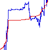
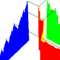

| The cartoon with turning points (4/9, 2/3) and (5/9, 1/3) is a
unifractal cartoon of
Brownian motion. |
| It does not give a convincing forgery
of real stock market data:
it lacks the global dependence and long tails of observed data. |
| By changing the
(dti, dYi), we can obtain
convincing forgeries
of real data. |
| Now we shall see there is an elementary way to change the way we measure
time so these two effects, global dependence and long tails, are disentangled. |
| First, some notation. |
| Plots of Y vs t are called price vs
clock time graphs. |
| To mimick real data, these graphs must be multifractal. |
| We shall find a way to rescale time to a new variable, T, so the plot of Y vs T is a
unifractal. |
| This time is called trading time. |
| We shall show that every multifractal
cartoon can be reexpressed as a unifractal cartoon in (multifractal) trading time. |
| The Price vs
Trading Time graph exhibits global dependence, but not long tails; the Clock Time vs
Trading Time graph exhibits long tails. |
|  |
General Principle Take the generator price increments
dY1, dY2, and dY3. There is a unique number D satisfying
|dY1|D + |dY2|D +
|dY3|D = 1. The trading time generators are
dT1 = |dY1|D,
dT2 = |dY2|D, and
dT3 = |dY3|D. While the trading time vs clock time (T vs t)
graph is multifractal, the price vs trading time graph (Y vs T) is unifractal. |
 |
Example 1 We take the multifractal generator with turning points
(1/4, 1/2) and (3/4, 1/4), calculate its trading time generator, and look at
the correlations in the price vs trading time graph. |
 |
Example 2 We take the multifractal generator with turning points
(.2, .7) and (.6, .4), calculate its trading time generator, and look at
the correlations in the price vs trading time graph. |
|  |
Graph in three dimensions The conversion of price vs clock time into
price vs trading time can be thought of as stretching and shrinking the time scale so the large jumps are
absorbed into the time rescaling, leaving a graph that emphasizes long-term dependence. A graph in three
dimensions, designed with the help of our students, makes this effect transparent. |
|